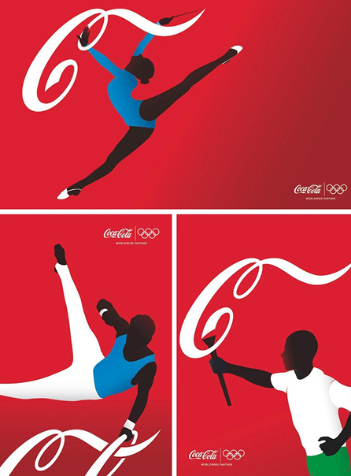

Nuove esigenze consapevoli.
La partnership ha inciso profondamente sul modo in cui il pubblico interagisce con i Giochi Olimpici, introducendo tradizioni che oggi consideriamo fondamentali. Un esempio è il coinvolgimento diretto nella staffetta della torcia olimpica, che Coca-Cola ha contribuito a trasformare in un evento itinerante capace di portare lo spirito dei Giochi anche nelle zone più remote delle nazioni ospitanti. Allo stesso modo, l’azienda ha inventato nuove forme di socializzazione durante l’evento, come il fenomeno dello scambio di spille (pin trading), che ha creato un terreno comune di interazione tra tifosi di culture diverse all’interno dei villaggi olimpici.
Ciò dimostra come la partnership non sia statica, ma in grado di evolversi tecnologicamente e socialmente. Dall’introduzione di programmi di riciclo massiccio negli stadi fino all’utilizzo di piattaforme digitali per connettere i giovani fan, Coca-Cola agisce come un motore di modernizzazione che aiuta il CIO a mantenere i Giochi rilevanti in un mondo in continua trasformazione. La partnership ha recentemente segnato un nuovo primato storico con l’accordo di co-partnership firmato insieme all’azienda cinese Mengniu, che garantisce la presenza del marchio fino ai Giochi di Brisbane del 2032. Questa mossa non rappresenta solo una garanzia di stabilità finanziaria per il movimento olimpico, ma riflette la capacità di Coca-Cola di adattarsi ai nuovi equilibri del mercato globale e alle sfide della sostenibilità ambientale
